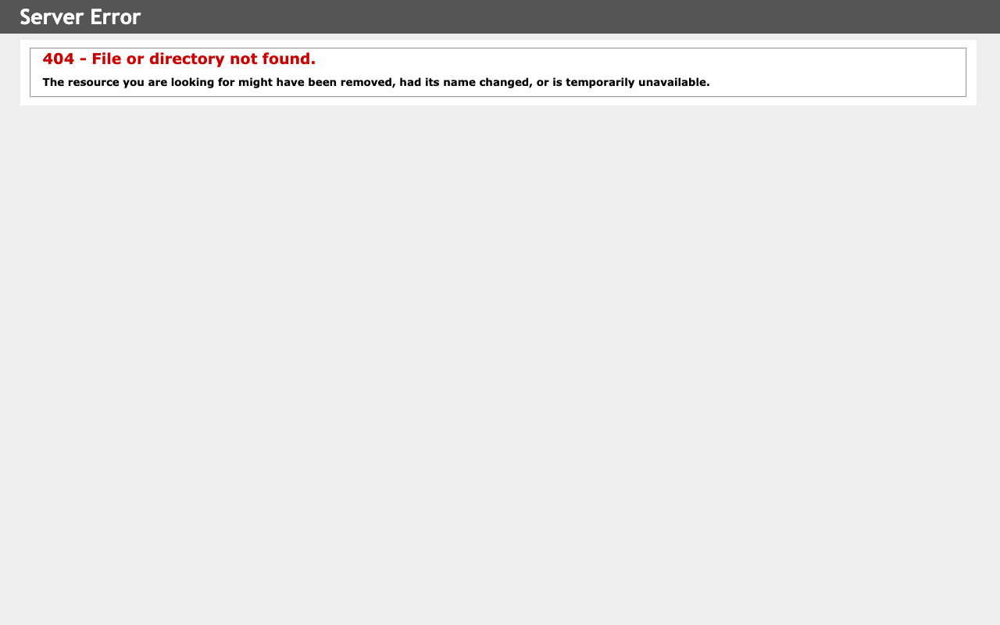
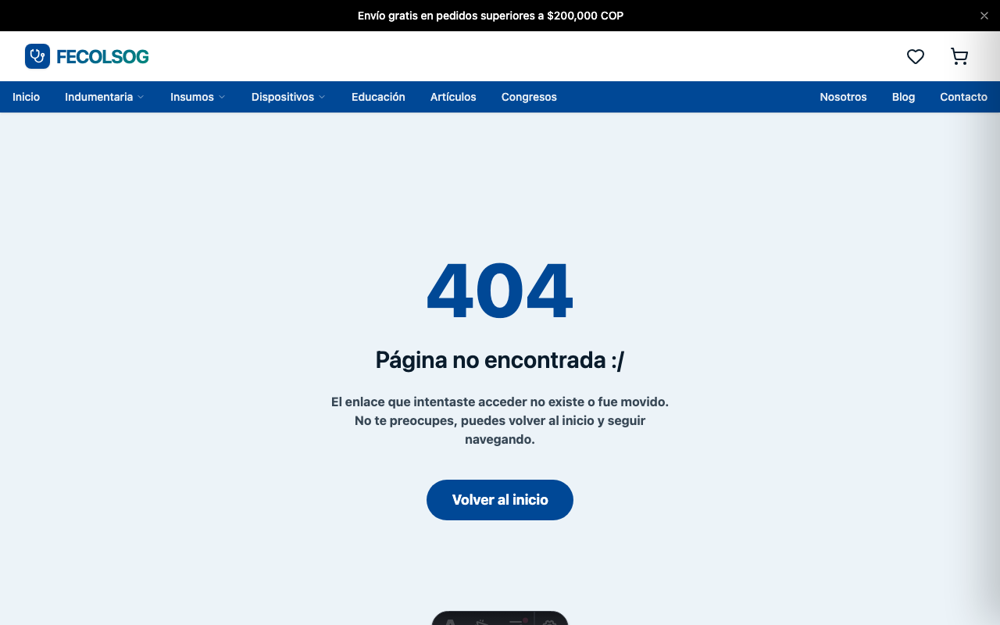

Entregables 2 & 3 — Universidad del Valle
Rediseño de
Contenido e
Interfaz Inclusiva
Tienda en Línea FECOLSOG
Jota Emilio López Ramírez
Esmeralda Rivas Guzmán
Esmeralda Rivas Guzmán
Universidad del Valle · Ingeniería de Sistemas · 2026
→ Flechas para navegar · E para editar01 / 13
55/100
Lighthouse · Accesibilidad
Contraste real
1,61:1
umbral mínimo WCAG AA
Requerido
4,5:1
criterio 1.4.3 WCAG 2.1
El problema02 / 13
6 Fallas Críticas
W1.4.3
Contraste
1,61:1 · El texto es ilegible para usuarios con baja visión
W1.4.4
Zoom bloqueado
user-scalable=no · Impide el redimensionamiento del texto
W3.1.1
Sin idioma
Ausencia de lang="es" · Los lectores de pantalla fallan
W3.3.2
Sin etiquetas
Formularios sin <label> · Solo placeholders que desaparecen
H2 · H9
Errores opacos
«Error 404» en inglés · Sin orientación ni ruta de recuperación
W2.4.1
Sin skip link
Usuarios de teclado recorren toda la navegación en cada página
Diagnóstico03 / 13
La propuesta — tres componentes
Voz
&
Tono
&
Tono
Story
telling
telling
Micro
copy
copy
+ Implementación técnica que corrige las violaciones WCAG identificadas
Propuesta04 / 13
Persona primaria
Dra. María
Restrepo
Restrepo
Ginecobstetra · 45 años · Bogotá
Necesita libros, congresos, indumentaria médica
Frustra lo engorroso, los errores sin explicación, el inglés
Tolera poca fricción — abandona en segundos
Fideliza si la primera compra es clara y confiable
Storytelling05 / 13
Microcopy
Comprar
→
Agregar al carrito
404 – File or directory not found
→
Página no encontrada. Vuelve al inicio.
Campo obligatorio (al pie del formulario)
→
El número de identificación es obligatorio. (junto al campo)
Microcopy06 / 13
Implementación técnica
Astro 5
SSG · HTML estático · sin JS innecesario
Tailwind CSS v4
CSS-first · tema OKLCH institucional
DaisyUI v5
Componentes WAI-ARIA nativos
React 19
Solo para carrito & notificaciones
Stack07 / 13
9
Criterios WCAG 2.1 corregidos
1.4.3
Contraste 1,61:1 → 8,6:1
AAA
2.4.1
Skip link al contenido principal
A
2.4.7
Foco visible global (:focus-visible)
AA
1.3.1
Semántica + breadcrumbs Schema.org
A
3.1.1
lang="es" en todos los documentos
A
1.4.4
Zoom habilitado · fuentes en rem
AA
Accesibilidad
08 / 13
Error 404 · Original
Pasamos
de
esto…
de
esto…
Servidor IIS en inglés
Sin marca · Sin navegación
Sin acción de recuperación
Sin marca · Sin navegación
Sin acción de recuperación

Antes / Después09 / 13
Error 404 · Rediseñado
a
esto.
esto.
En español · Marca FECOLSOG
Navegación completa
Botón «Volver al inicio»
Navegación completa
Botón «Volver al inicio»
H2 · H9 Nielsen · WCAG 3.3.3

Antes / Después10 / 13
A continuación
Demo
tiendaonline · rediseño implementado · Astro 5
Demo en vivo
11 / 13
Resultados
8,6:1
AAA
Contraste
antes 1,61:1
9
Corregidos
Criterios WCAG
antes 0 conformes
×8
Crecimiento
Catálogo
4 → 33 productos
11
Páginas
Contenido nuevo
blog + soporte
Resultados12 / 13
Gracias.
Jota Emilio López Ramírez · Esmeralda Rivas Guzmán
Conclusión13 / 13